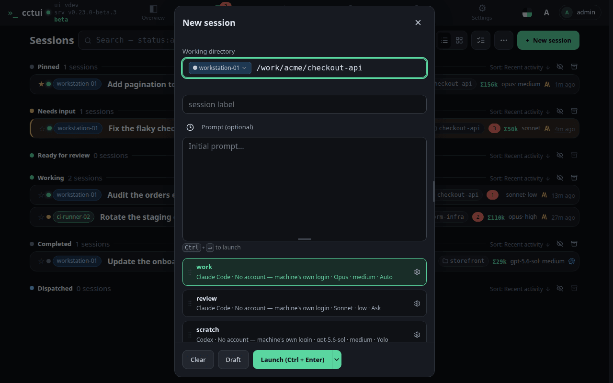
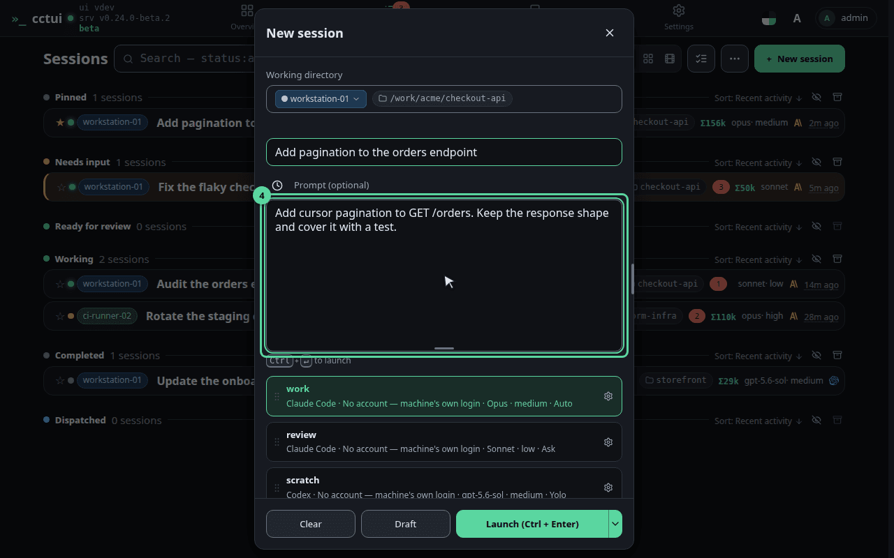
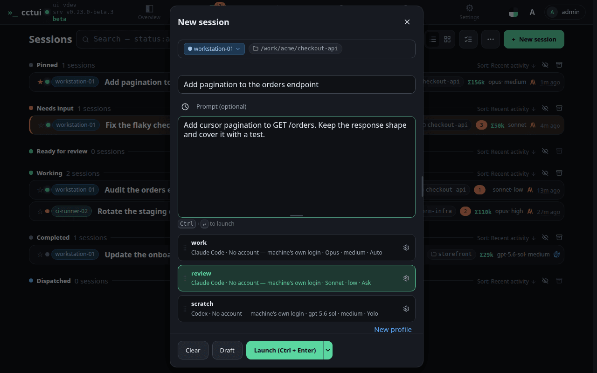
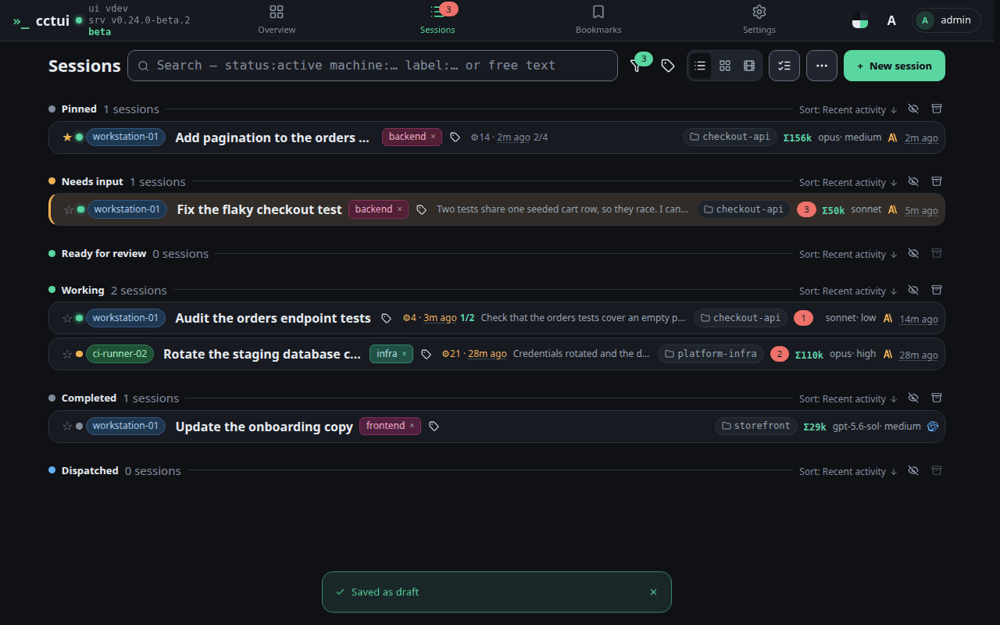
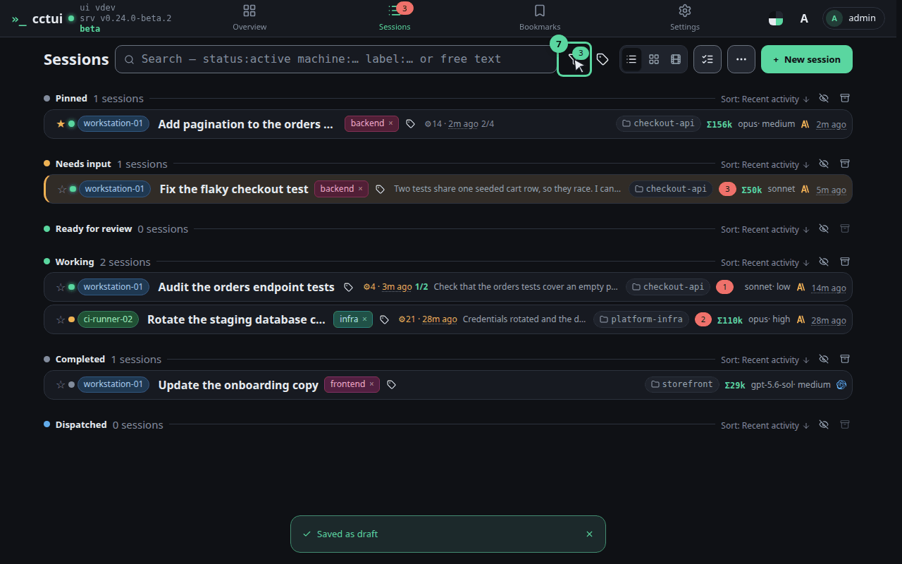
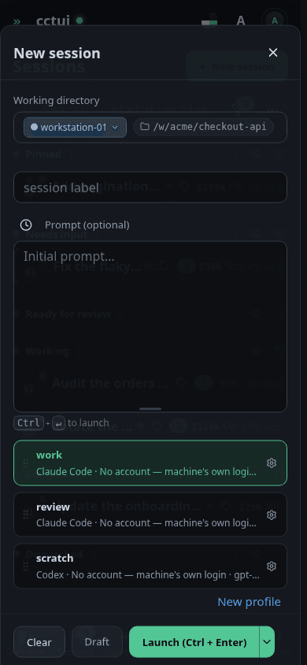
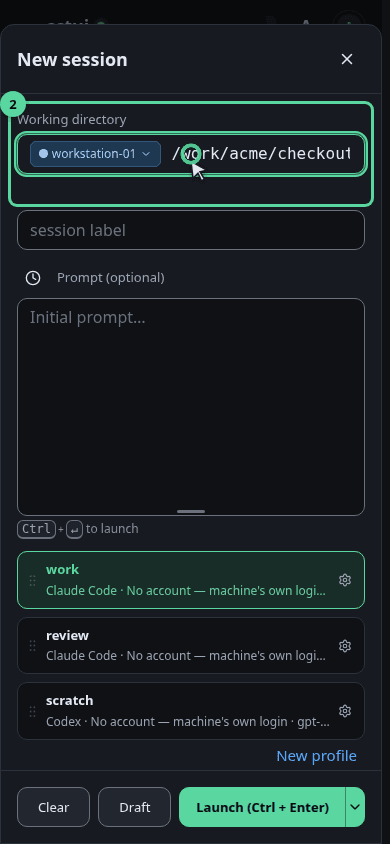
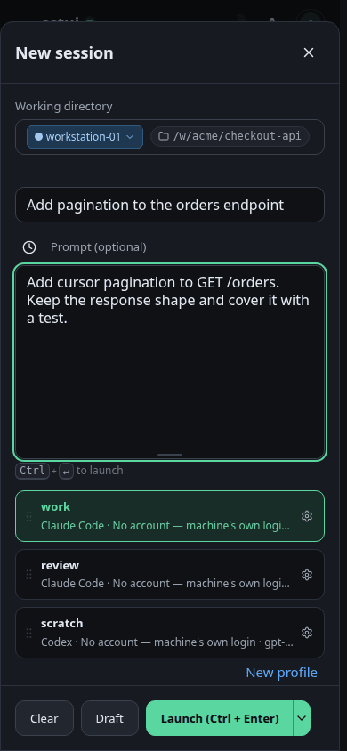
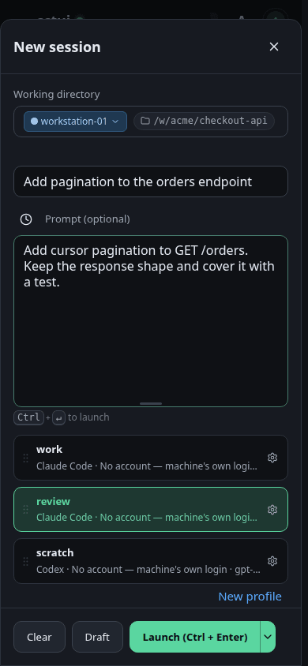
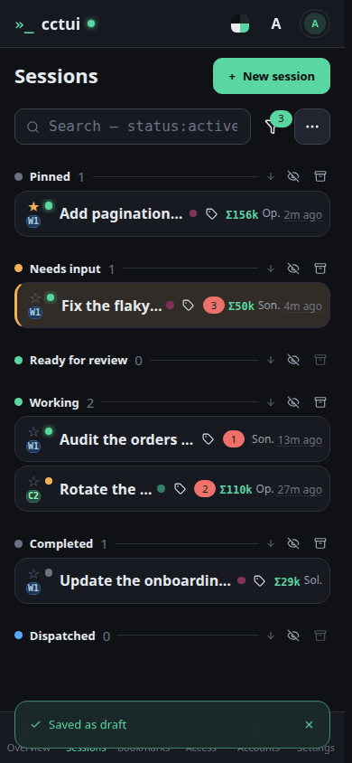

Open the new-session dialog Everything a run needs is in this one dialog: the machine, the folder, the prompt and the profile. If you docked it beside the list, it is already open.

Pick where it runs Choose the machine, then the folder. That folder is the agent’s whole world — it reads and edits what is inside it and nothing else, so point it at the project you actually mean. Set them now.

Say what you want done This is the agent’s brief, and it is the whole instruction — it will not ask what you meant before it starts. Be as specific as you would be with a new colleague.

The profile decides how it thinks A profile bundles four things: the harness, the model, how hard it reasons, and how much it may do without asking. Pick one rather than setting all four every launch — keep a cheap one for throwaway work and a careful one for the rest.

Draft it rather than launch it Launch would start the agent now — it would begin reading and editing the folder you chose. Draft, beside it, saves all of this and runs nothing. Press Draft: you can launch it whenever you like.

Where the draft went Drafts have their own group in the list, switched off until you ask for it — behind this button, with all the other groups. Your run waits there with its machine, folder, profile and prompt intact, and nothing executes until you launch it.
viewport=mobile theme=dark

Open the new-session dialog Everything a run needs is in this one dialog: the machine, the folder, the prompt and the profile. If you docked it beside the list, it is already open.

Pick where it runs Choose the machine, then the folder. That folder is the agent’s whole world — it reads and edits what is inside it and nothing else, so point it at the project you actually mean. Set them now.

Say what you want done This is the agent’s brief, and it is the whole instruction — it will not ask what you meant before it starts. Be as specific as you would be with a new colleague.

The profile decides how it thinks A profile bundles four things: the harness, the model, how hard it reasons, and how much it may do without asking. Pick one rather than setting all four every launch — keep a cheap one for throwaway work and a careful one for the rest.Draft it rather than launch it Launch would start the agent now — it would begin reading and editing the folder you chose. Draft, beside it, saves all of this and runs nothing. Press Draft: you can launch it whenever you like.

Where the draft went Drafts have their own group in the list, switched off until you ask for it — behind this button, with all the other groups. Your run waits there with its machine, folder, profile and prompt intact, and nothing executes until you launch it.